Eighteen lessons over six weeks, each with its own deck and booklet section — forces and free body diagrams, Newton’s laws, energy, levers and projectile motion, building to a culminating trebuchet investigation.
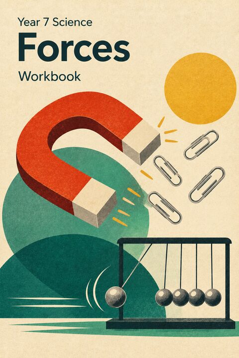
Each lesson’s deck, and the page it starts on in the printed booklet.
Forces, measuring them, and drawing them — then Experiment 1, five everyday forces.
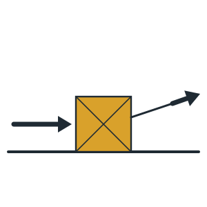
1 What is a Force? Turn to page 3Pushes and pulls, measuring force in newtons, mass and weight, contact and non-contact forces.
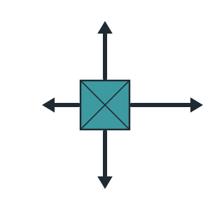
2 Force Diagrams & Net Force Turn to page 17Naming forces, arrows to scale, free body diagrams, balanced and unbalanced forces.
Five workstations — pushing, gravitational, electrostatic, magnetic and buoyancy forces, and which way each one acts.
Newton’s First and Third Laws, then the Second Law — then Experiment 2, friction and mass.
Inertia and why moving things keep moving; action–reaction force pairs and the rocket.
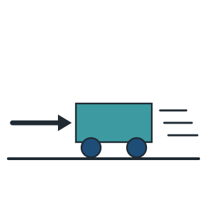
5 Newton’s Second Law: F = ma Turn to page 50Acceleration, and how force, mass and acceleration are linked — using the net force.
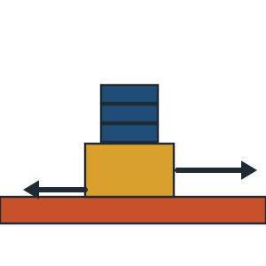
6 Experiment 2: Friction and Mass Turn to page 64A fair test of how adding mass to a block changes friction — prediction, repeat trials and means.
Energy, Experiment 3, then levers.
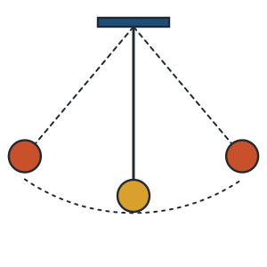
7 Energy & Transformation Turn to page 73Forms of energy, energy chains, conservation and efficiency, GPE and KE.
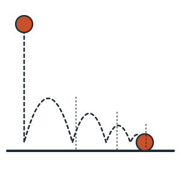
8 Experiment 3: Bounce Efficiency Turn to page 86Drop height against bounce height — how much energy survives a bounce.
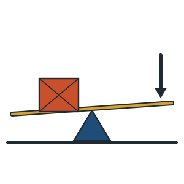
9 Simple Machines & Levers Turn to page 94Fulcrum, effort and load, mechanical advantage, the lever classes, the trebuchet as a lever.
Experiment 4, an optional Year 8 extension, then projectile motion.
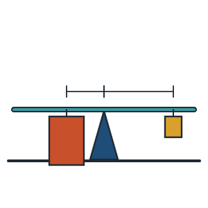
10 Experiment 4: Mechanical Advantage Turn to page 108Balance a load with lighter masses, measure the arms, and find the MA two ways — with a lever to try first.
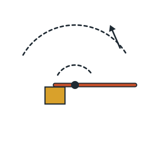
11 Optional Levers Extension Turn to page 117Year 8: turning effects, why the tip of a long arm moves fast, and how the counterweight’s energy limits launch speed.
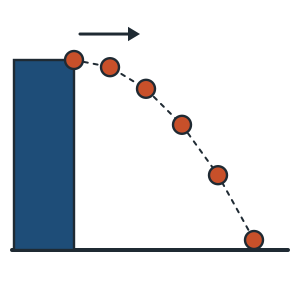
12 Projectile Motion Turn to page 129Two independent motions, time of flight, range, and measuring gravity from a velocity–time graph.
Experiment 5, an optional range extension, then planning the investigation.
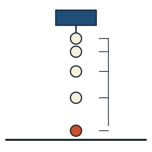
13 Experiment 5: Measuring g Turn to page 139Drop objects of different mass under a motion sensor, find g from the graph, and work out the percentage error.
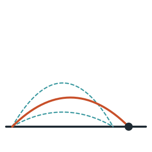
14 Optional Optimising Range Turn to page 149Year 8: why 45° goes furthest, complementary angles, the range equation, and why real launches are set lower.
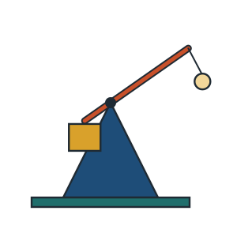
15 Planning the Investigation In the investigation bookletHow a trebuchet throws, measuring the arm’s spin with a sensor, variables, prediction and risk assessment.
Launch, analysis, then the open-booklet investigation test.
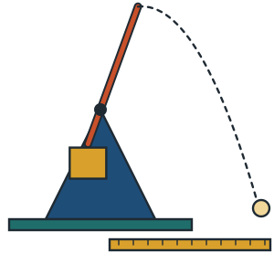
16 Trebuchet Launches In the investigation bookletFive counterweights, three launches each: the range and the arm’s peak spin.
Opens the investigation booklet — own deck coming
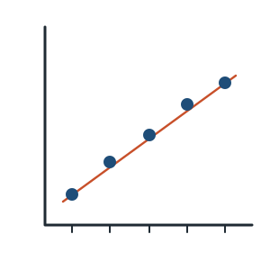
17 Analysis & Conclusion In the investigation bookletTwo line graphs, the pattern explained with energy and levers, sources of error, the conclusion and Part D.
Opens the investigation booklet — own deck coming
An open-booklet test: questions on your own results, then a new set of trebuchet data.
Bring your investigation booklet — the paper comes from your teacher
Everything on the tabs above, with what each one holds.
The materials students work from across the unit.
The unit mapped week by week, and the lab requisitions — not gated, but written for staff.
Password-gated — this page decrypts in the browser with the staff password.